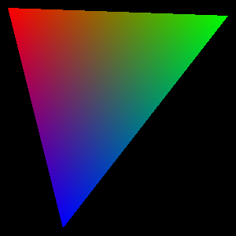
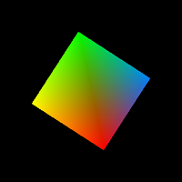
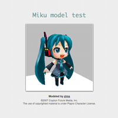
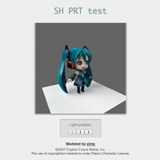

The White Box of 3D Programming
SmallWorld3D is an educational realtime 3DCG library. Entire system including polygon rasterizer is written in short javascript.
| No |
No |
Only Pure Javascript |
Step 1: Create framebuffer and rasterizer.
framebuffer = new smallworld3d.ImageBuffer(300, 300, true); rasterizer = new smallworld3d.Rasterizer(framebuffer); rasterizer.enableZTest = false;
Step 2: Draw a polygon.
rasterizer.setVertexAttribute(0, 10, 10, 0, 1, 255, 0, 0, 255); rasterizer.setVertexAttribute(1, 290, 20, 0, 1, 0, 255, 0, 255); rasterizer.setVertexAttribute(2, 80, 290, 0, 1, 0, 0, 255, 255); rasterizer.fillTriangle();
Step 3: Output.
framebuffer.emitToCanvas(g); // g is a 2d context of canvas
You'll get:

|  Simple Polygon |
 Miku Model |
 SH PRT |